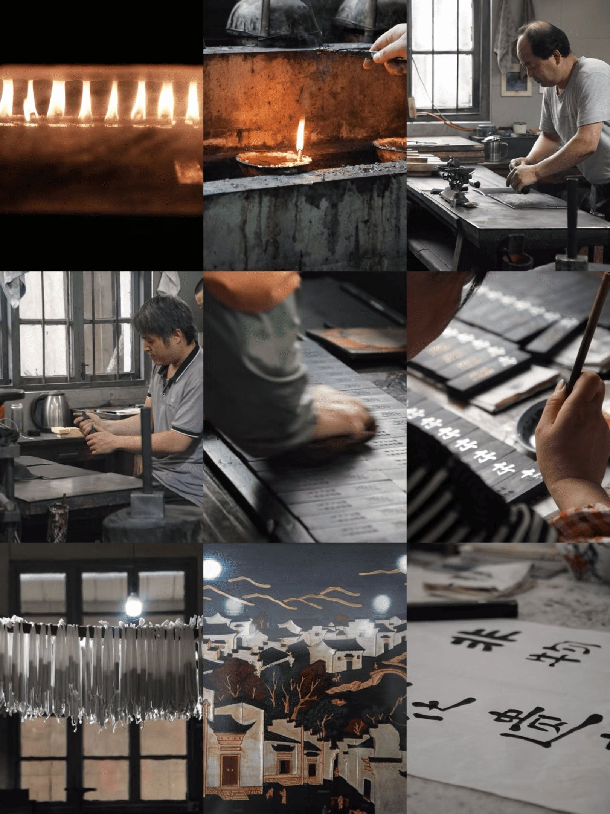

墨韵千年，徽墨匠心
|  |
直播介绍墨韵千年，徽墨匠心 —— 直播探秘徽墨的传世工艺一点如漆，万载存真。 徽墨，这一中华文房瑰宝，承载着千年的文化底蕴与艺术风华。从松烟的袅袅升腾，到墨锭的精美成型，其间蕴含着怎样的神秘与匠心？让我们一同踏入徽墨的制作世界，领略这指尖上的文化传奇！ 无论您是痴迷书法绘画的艺术达人，还是醉心于传统文化研究的学者，亦或是对古老技艺充满好奇与向往的探索者，这场徽墨制作过程直播都将带您穿越时空，走进那个墨香四溢的文化世界，见证徽墨这一古老艺术在现代社会中的传承与创新，感受中华民族传统文化的博大精深与历久弥新。 |